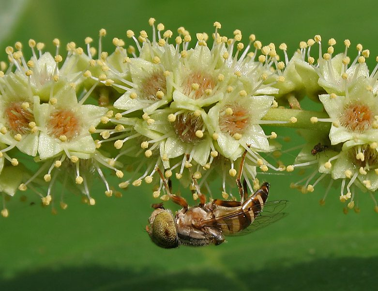

बिग-हेडेड ड्रोन फ्लाईBig-headed Drone Fly
Eristalinus megacephalus · Syrphidae · INS-0279

- Scientific name वैज्ञानिक नाम
- Eristalinus megacephalus (Rossi, 1794)
- Family कुल
- Syrphidae
- Hindi हिंदी
- बिग-हेडेड ड्रोन फ्लाई
- Local names स्थानीय नाम
- big-headed drone fly
- Status here यहाँ की स्थिति
- native
- Movement आवागमन
- Resident, here all year
- Known from कहाँ दर्ज
- Others have published records from the wider Awadh–Purvanchal plain, none yet from Basti–Ayodhya अवध–पूर्वांचल से दूसरों के प्रकाशित अभिलेख, बस्ती–अयोध्या से अभी नहीं
- IUCN IUCN
- not evaluated
- Review समीक्षा
- not yet reviewed
When to look कब देखें
Present all year. साल भर मौजूद।
बिग-हेडेड ड्रोन फ्लाई / Big-headed Drone Fly
Eristalinus megacephalus (Rossi, 1794) — Syrphidae
बिग-हेडेड ड्रोन फ्लाई — यह एक मजबूत, शहद की मक्खी जैसी दिखने वाली सिरफिड मक्खी है जिसका सिर बहुत बड़ा होता है और इसकी उभरी आँखों पर अनगिनत काले-भूरे छोटे धब्बे भरे होते हैं। इसका धड़ कांस्य रंग का और पेट पर हल्के पीले धब्बे होते हैं। इसके जलीय लार्वा (रैट-टेल्ड मैगट) गंदे पानी में सड़न साफ करते हैं जबकि वयस्क मक्खी फूलों का परागण करती है।
Quick Identification त्वरित पहचान
| Feature | Description |
|---|---|
| Eyes | Enormous hemispherical compound eyes densely covered in fine dark brown spots |
| Head | Disproportionately large, globose, conspicuously broader than the thorax |
| Thorax | Dark bronze with subtle pale pollinose longitudinal stripes and yellowish scutellum |
| Abdomen | Shiny blackish-brown adorned with broad yellowish or translucent basal patches |
| Mimicry | Batesian mimic of honey bees in stout body form, posture, and loud buzzing flight |
Stout bee-mimicking hoverfly instantly identified by its immense compound eyes densely speckled with dark brown punctations, broad flattened abdomen, and loud buzzing flight near water bodies.
Field tip: Look around sunny village pond margins for stout bee-like flies with spotted eyes resting on water hyacinth or lotus leaves.
हिंदी: बहुत बड़ी चितकबरे धब्बों वाली आँखों और शहद की मक्खी जैसे भारी शरीर वाली मक्खी जो तालाबों और फूलों के पास भिनभिनाती मिलती है।
Morphology आकारिकी
| Feature | Description |
|---|---|
| Head | Globose, wider than thorax, entirely dominated by punctate compound eyes |
| Thorax | Robust, dark bronze to blackish, coated with pale greyish pubescence |
| Abdomen | Broad, flattened oval, dark brown with yellowish basal lateral maculae |
| Wings | Hyaline with radial vein looped down into first posterior cell; spurious vein present |
| Legs | Sturdy, dark brown with yellowish tibiae and clawed tarsi |
| Measurement | Measurement not available in consulted open sources. |
The head is unusually large and hemispherical. The compound eyes are holoptic in males and dichoptic in females, covered with scattered dark brown punctations that do not form continuous stripes. The thorax is stout, dark bronze-black with subtle grey pollinosity. The abdomen is broad, flattened, blackish-brown with pale yellowish patches. Wings possess a deep loop in the radial sector.
हिंदी: इसका सिर धड़ से भी चौड़ा होता है। आँखों पर सैकड़ों महीन काले बिंदु होते हैं। पंखों की नसें खास तौर पर मुड़ी होती हैं और पेट चौड़ा तथा चपटा होता है।
Behaviour & Ecology व्यवहार और पारिस्थितिकी
Adults are swift, strong fliers active during sunny daylight hours. They produce an audible humming buzz during flight that reinforces their Batesian mimicry of stinging honey bees (Apis species), deterring visual avian predators. Adults forage on flowers for nectar and pollen, frequently visiting orchards of Mango and field weeds. Gravid females seek out highly eutrophic, stagnant water bodies rich in decomposing organic matter to deposit egg rafts on floating plant debris.
हिंदी: यह दिन में तेज गति से उड़ती है और मधुमक्खी जैसा भिनभिनाती है जिससे पक्षी इसे डंक मारने वाला समझकर छोड़ देते हैं। यह आम के बौर और जंगली फूलों पर रस चूसती है।
Life Cycle / Phenology जीवन चक्र
Breeds throughout the year in the tropical plains. The larvae are aquatic saprophages known as "rat-tailed maggots". The larval body is cylindrical and wrinkled, terminating in an extraordinarily long, telescopic breathing siphon that can extend to the water surface to draw atmospheric oxygen. Larvae feed by filtering suspended bacteria and decomposing organic particulate matter. When mature, they crawl out of the water to pupate in drier surrounding soil or under leaf litter. Adults emerge within one to two weeks.
हिंदी: इसका लार्वा पानी के अंदर रहने वाला 'चूहा-पूंछ लार्वा' होता है जो अपनी लंबी नली जैसी पूंछ को पानी से बाहर निकालकर सांस लेता है। बड़ा होकर यह किनारे की सूखी मिट्टी में प्यूपा बनता है।
Host Plants or Prey आहार
Larvae feed on decomposing organic matter, sewage films, and aquatic bacterial blooms in stagnant cattle wallows and compost runoff. Adult flies feed on the nectar and pollen of varied agricultural and wild plants, including Indian Mustard, Mango, and roadside daisies.
हिंदी: इसके लार्वा नालियों और गोबर के गड्ढों में सड़े-गले पदार्थों और बैक्टीरिया को खाते हैं। वयस्क मक्खियां आम, सरसों और सूर्यमुखी के फूलों का मकरंद पीती हैं।
Predators / Natural Enemies शत्रु
Adults are preyed upon by insectivorous birds, including bee-eaters and swifts, as well as by robber flies and crab spiders lurking on blossoms. The aquatic maggots are consumed by diving beetles and water scorpions.
हिंदी: वयस्क मक्खियों को कीटभक्षी चिड़ियों और मकड़ियों द्वारा पकड़ा जाता है। पानी में रहने वाले लार्वा को जल-भृंग और अन्य शिकारी जलीय कीड़े खाते हैं।
Agricultural / Human Relevance कृषि प्रासंगिकता
A beneficial dual-service insect. The larvae accelerate the biological decomposition of rich organic livestock slurry and municipal effluent, while the adults provide effective cross-pollination services for mango orchards and rural vegetable crops. Incapable of stinging, it is completely harmless to humans and domestic animals.
हिंदी: यह एक उपयोगी कीट है। इसके बच्चे गंदे पानी की सड़ांध साफ करते हैं और वयस्क मक्खियां आम और सब्जियों में परागण का काम करती हैं। इसमें कोई डंक नहीं होता।
Expected Locally स्थानीय रूप से अपेक्षित
Not a field record. Written from published accounts for eastern Uttar Pradesh. No confirmed local sighting yet — if you have seen it, that is what the atlas needs.
अभी तक स्थानीय पुष्टि नहीं। यह विवरण प्रकाशित स्रोतों से है, किसी अवलोकन से नहीं।
Widely distributed around village tanks, irrigation ditches, cattle shelters, and orchards across the middle Gangetic plains. Observers in eastern Uttar Pradesh should inspect sunny vegetation bordering village ponds for stout flies with spotted eyes.
GBIF holds published records from the wider Awadh–Purvanchal plain, none yet from Basti–Ayodhya.
A first local record for the atlas would be a clear photograph showing diagnostic features, accompanied by date, time, and precise location coordinates sent through the project's About page.
हिंदी: बस्ती और अयोध्या के गांवों, तालाबों और आम के बागों में यह मक्खी आसानी से पाई जा सकती है। इसकी चितकबरे आँखों वाली साफ फोटो खींचकर एटलस को भेजें।
Distribution वितरण
Global range: Widespread across southern Europe, Africa, the Middle East, South Asia, and Southeast Asia.
In India: Found across all states in wetland, suburban, and rural agrarian habitats.
In Uttar Pradesh: Distributed throughout the Gangetic plains near water bodies and livestock centers.
In Basti district / eastern UP: Documented across rural wetland tracts based on regional dipteran surveys.
हिंदी: यह अफ्रीका, दक्षिणी यूरोप और पूरे दक्षिण एशिया में फैली हुई है। उत्तर प्रदेश के सभी ताल-तलैयों और ग्रामीण इलाकों में इसका नियमित फैलाव है।
Research Questions शोध प्रश्न
- What organic substrate concentrations optimize larval survival of Eristalinus megacephalus in village drains?
- How effective are adult drone flies as pollinators of mango panicles compared to honey bees? / क्या यह मक्खी आम के बौर में मधुमक्खियों जितना अच्छा परागण करती है?
- What is the tolerance of rat-tailed maggots to synthetic chemical fertilizers in agricultural drainage ditches?
- A schoolchild can use a hand lens to look at the spotted eyes of a drone fly resting on a pond leaf / क्या कोई बच्चा ताल के पत्ते पर बैठी इस मक्खी की चितकबरी आँखों को लेंस से देख सकता है?
- How does seasonal drying of rural ponds affect adult population abundance across Awadh?
हिंदी: क्या गंदे पानी के गड्ढों में यह मक्खी पानी की सफाई में मददगार है? क्या बच्चे इसकी बड़ी चितकबरी आँखों को देखकर पहचान सकते हैं?
Similar Species मिलती-जुलती प्रजातियाँ
| Species | How to tell apart | हिंदी | |
|---|---|---|---|
| Eristalinus arvorum | Compound eyes marked with vertical wavy dark stripes rather than random spots | स्ट्राइप्ड ड्रोन फ्लाई की आँखों पर धब्बों की जगह खड़ी लहरदार धारियां होती हैं | |
| Eristalis tenax | Stouter body mimicking [[european_honey_bee\ | European honey bee]]; eyes unspotted and distinctly hairy | कॉमन ड्रोन फ्लाई की आँखों पर कोई धब्बे नहीं होते और शरीर पर ज्यादा घने बाल होते हैं |
Field rule: Stout bee-mimicking hoverfly with immense compound eyes densely speckled with small dark brown spots.
हिंदी: बड़ी चितकबरी आँखों और शहद की मक्खी जैसे भारी शरीर वाली मक्खी जो हवा में भिनभिनाती है।
Taxonomy & Classification वर्गीकरण
Original description. Rossi (1794), Mantissa Insectorum, vol. 2, p. 61; described under the basionym Syrphus megacephalus.
Subspecies. Monotypic species throughout its broad Old World range.
Family and order placement. Belongs to the hoverfly family Syrphidae (subfamily Eristalinae, tribe Eristalini), order Diptera, class Insecta.
Phylogenetic notes. Placed in the subgenus Lathyrophthalmus Mik, defined by punctate compound eyes and looped wing venation.
IUCN status rationale. Not currently evaluated on the IUCN Red List of Threatened Species.
हिंदी: इसे 1794 में पिएत्रो रॉसी ने Syrphus megacephalus नाम से वर्णित किया था। बाद में इसे सिरफिडी परिवार के Eristalinus जीनस में रखा गया।
Photo Gallery फोटो गैलरी
No photos yet — add field photos to media/species/big_headed_drone_fly/ and run node scripts/sync_photos.js.
Photos needed आवश्यक फोटो
- [ ] Adult fly resting on leaf showing spotted compound eyes (पत्ते पर बैठी मक्खी जिसकी चितकबरी आँखें दिखें)
- [ ] Drone fly feeding on flower nectar (फूल का रस पीती हुई मक्खी)
- [ ] Aquatic rat-tailed maggot with extended breathing siphon (पानी में लंबी पूंछ वाला लार्वा)
References संदर्भ
- Original description: Rossi, P. (1794). Mantissa Insectorum, exhibens species nuper in Etruria collectas. Vol. 2. Typographia Polloni, Pisis, 154 pp. (as Syrphus megacephalus).
- Brunetti, E. (1923). The Fauna of British India, Including Ceylon and Burma: Diptera. Vol. 3 (Pipunculidae, Syrphidae, Conopidae). Taylor and Francis, London.
- Mitra, B., Roy, S., Imam, I. & Ghosh, M. (2015). A review of the hover flies (Syrphidae: Diptera) from India. International Journal of Fauna and Biological Studies, 2(3), 61–73.
- Pérez-Bañón, C., Rojo, S., Ståhls, G. & Marcos-García, M. Á. (2003). Taxonomy of European Eristalinus (Diptera: Syrphidae) based on larval morphology and molecular data. European Journal of Entomology, 100(3), 417–428.
- GBIF Occurrence Data — Eristalinus megacephalus, India (2025).
Source file: species/fauna/insects/big_headed_drone_fly.md